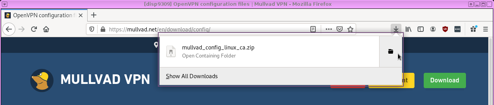
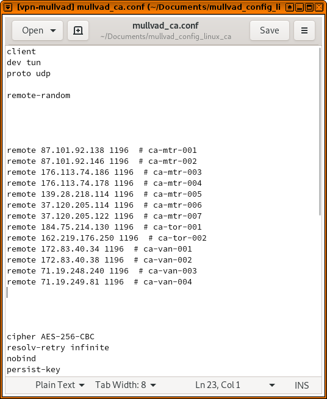

Using Mullvad VPN in Qubes
A friend wanted my help configuring Mullvad VPN on their Qubes computer. Instead of just helping them, I decided to write a quick blog post explaining how I normally set up VPNs in Qubes. There are many different ways -- Mullvad even has its own Qubes guide -- but I prefer using NetworkManager system tray applets, so I can always see if my VPN is connected or not. I also use a simple script that I set to run when my AppVM boots to automatically connect to the VPN, and reconnect if it disconnects, and Qubes firewall rules to prevent non-VPN internet traffic from sneaking by.
First, create a new VM called vpn-mullvad. Use the latest Fedora template you have (fedora-30 in my case), and make sure to set networking to sys-firewall and not default (sys-firewall). Finally, check both the "provides network" and "launch settings after creation" boxes. ("Provides network" means this new VM will be able to provide internet access to other VMs.)
When the vpn-mullvad settings open, switch to the "Services" tab and add a service called network-manager, and click ok. This will make it so that when this VM boots up, you'll have a NetworkManager system tray applet in the top-right corner of your screen.
Now, open a web browser in a disposable VM (click the Qubes menu, then Disposable: fedora-30-dvm, fedora-30-dvm: Firefox), and login to your Mullvad account at mullvad.net. Once you're logged in, go to Mullvad's OpenVPN configuration file generator. Set your platform to Linux, choose a location, and make sure to check Use IP addresses. Then click download. (In my case, since I'm setting up this VPN to go to Canada, I'm downloading the file mullvad_config_linux_ca.zip.)
Now open a file manager in your disposable VM that contains the file you just downloaded.

And copy it to your vpn-mullvad VM. (This will probably boot that VM for the first time.)
Now open a file manager in your vpn-mullvad VM (click the Qubes menu, Service: vpn-mullvad, vpn-mullvad: Files). Navigate to the QubesIncoming folder, then the folder inside that that's the name of your disposable VM (in my case, disp9309). You should see the zip file with the Mullvad OpenVPN config. Right-click on it and choose "Extract Here". Then drag the extracted folder (mullvad_config_linux_ca, in my case) to Documents. Then, navigate inside this folder, and you should see your VPN config files.
Also, you might notice that when your vpn-mullvad VM booted up, there is a new NetworkManager applet in your system tray. Click on it, go to VPN Connections, Add a VPN connection....
Then choose Import a saved VPN configuration... from the dropdown list, and click Create.
Then browse for the Mullvad .conf file in your Documents folder.
Back in your file manager, double click on mullvad_userpass.txt -- this will should you what to put into the username and password fields.
Then click save. This will popup a window asking you to choose a password for the default keyring -- you can just leave it blank and click continue, and click continue again to confirm you want to store passwords unencrypted. (Everything on your computer is actually encrypted with full disk encryption, and you won't be running any other software in this VM that could access these files.)
Now you should be able to click the vpn-mullvad NetworkManager system tray icon, click VPN Connections, and connect to the new VPN you just added. It should attempt to connect, and if all goes well you should see a notification that says, "VPN connection has been successfully established," and the NetworkManager icon should have a little lock next to it.
Now, let's make this VPN automatically connect whenever it boots up. Open a terminal in vpn-mullvad (click Qubes, Service: vpn-mullvad, vpn-mullvad: Terminal), and run:
sudo gedit /rw/config/autovpn.sh
This will open up a blank file using gedit (feel free to use whatever text editor you prefer). Copy and paste this script into it. You may need to change the line that says nmcli con up mullvad_ca to use the name of the VPN config that you added, assuming you chose a location other than Canada.
#!/bin/bash
while [ "true" ]
do
if nmcli con |grep -Fq tun0
then
echo "Already connected, sleeping 5"
sleep 5
else
echo "Connecting"
nmcli con up mullvad_ca
fi
done
Then save this file and quit the editor. This script basically checks to see if you're connected to the VPN. If you are, it waits 5 seconds and checks again. If you're not, it connects you to the VPN. And it loops forever -- so that if you ever get disconnected, it will detect this and automatically reconnect.
Back in your terminal, make it executable:
sudo chmod +x /rw/config/autovpn.sh
And now edit your rc.local file:
sudo gedit /rw/config/rc.local
Add sudo -u user /rw/config/autovpn.sh & to the end of this file, and save and exit.
The rc.local script, which gets run every time the VM boots up, will now run the autovpn.sh script in the background.
Go ahead and try it out! Power off the vpn-mullvad VM (click the Qubes logo in the system tray, then vpn-mullvad, Shutdown), and then power it on again (you can open the file manager in that VM again). The VPN should automatically connect.
Now, let's prevent some leaks. It's common for programs on your computer to try to do stuff on the internet while your VPN isn't connected -- maybe it hasn't connected yet, or it got disconnected for some reason. We can use Qubes firewall rules to prevent the vpn-mullvad from communicating with anything except for the VPN servers that it's configured to connect to, so if (for example) your VPN gets disconnected but you have a web browser open, your browser won't load anything from your real IP address -- that traffic will get dropped by the firewall.
In a file manager in vpn-mullvad, go to the folder that contains your Mullvad OpenVPN config files, and open the .conf file. You'll see a list of lines that start with remote -- these are the various OpenVPN servers that Mullvad is configured to try connecting to. (In my case, these are in Montreal, Toronto, and Vancouver.)

Now open the settings for vpn-mullvad (click the Qubes menu, go to Service: vpn-mullvad, vpn-mullvad: Qubes Settings) and switch to the "Firewall rules" tab. You can add a new rule to allow each of these IP addresses through, and blocking all other IPs.
But before we do, a quick note about Qubes firewall rules. For some reason, Qubes seems to choke if you have too many of them (more than maybe 20). So for example, if you set up Mullvad to choose servers in the US, then there will be way too many servers in the list. So, before proceeding, delete some of them from this file to bring it down to a more managable number of servers. If you do this, make sure to delete your VPN in NetworkManager and then add it again.
And also a quick note on copy and paste. There's no easy way to copy something from a VM and then paste it into dom0. There are good security reasons for this, but it will make this tedious work. So if you want to copy and paste, you can actually just view this file directly from dom0. Open a terminal in dom0 (click the Qubes menu, and open Terminal Emulator). Then run this:
qvm-run --pass-io vpn-mullvad 'cat ~/Documents/mullvad_*/*.conf' | grep "remote "
This will show you all of the remote lines from your OpenVPN config file, but inside your dom0 terminal, and you can copy from this window to paste into the Qubes firewall rules.
Now, back in the vpn-mullvad settings window, in the firewall rules tab, select "Limit outgoing Internet connections to ...". Then click the plus button, and add a rule for each IP address, copying and pasting from the dom0 terminal if you'd like. It's fine to set the protocol to "Any" for each rule.
When you click ok, you're done setting up vpn-mullvad! It uses the NetworkManager applet, it automatically connects if it gets disconnected, and thanks to the firewall rules, as long as you set vpn-mullvad as your networking VM, none of your downstream VMs will make any internet connections that don't go through the VPN you just set up.
If you want all of your VMs use Mullvad by default, open Qubes Global Settings (Qubes menu, System Tools, Qubes Global Settings) and change "Default netVM" from sys-firewall to vpn-mullvad and click ok.
And finally, you may want the ability to open a browser window while not using a VPN -- like, if you connect to a public wifi network and need to click through a captive portal. I solve this problem by making a disposable VM template specifically for this purpose.
Open the settings for fedora-30-dvm (Qubes menu, Displable: fedora-30-dvm, fedora-30-dvm: Qube Settings) and click "Clone qube" -- rename this clone to fedora-30-clearnet-dvm. Now open the settings for fedora-30-clearnet-dvm, and change "Networking" from default (vpn-mullvad) to sys-firewall, and click ok.
Now, if you need to click through a captive portal, you can just open a browser in a fedora-30-clearnet-dvm disposable VM to click through it, and as soon as you have internet vpn-mullvad will automatically connect to Mullvad, and internet will start working on in the rest of your VMs.